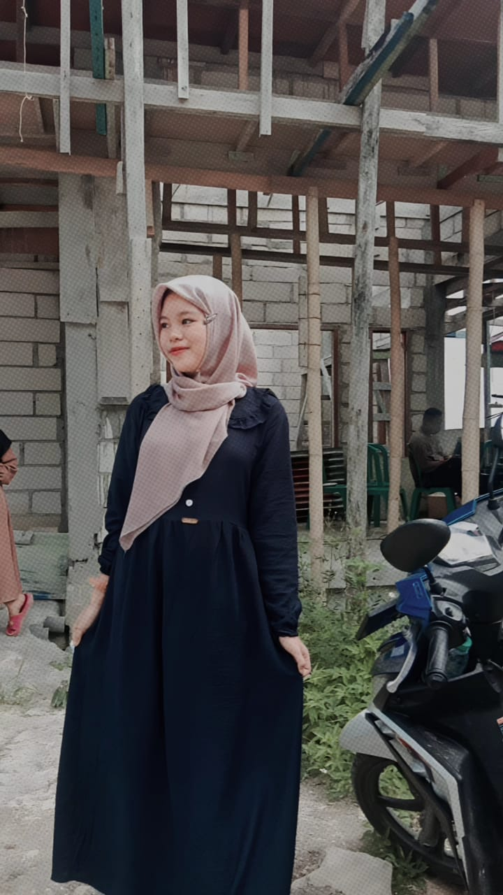

<!DOCTYPE html>
<html lang="en">
<head>
    <meta charset="UTF-8">
    <meta name="viewport" content="width=device-width, initial-scale=1.0">
    <title>index</title>
    <link rel="stylesheet" href="testes.css"> 
    <!doctype html>
<html lang="en">
  <head>
    <meta charset="utf-8">
    <meta name="viewport" content="width=device-width, initial-scale=1">
    <title>Bootstrap demo</title>
    <link href="https://cdn.jsdelivr.net/npm/bootstrap@5.3.7/dist/css/bootstrap.min.css" rel="stylesheet" integrity="sha384-LN+7fdVzj6u52u30Kp6M/trliBMCMKTyK833zpbD+pXdCLuTusPj697FH4R/5mcr" crossorigin="anonymous">
  </head>
  <body>
    <script src="https://cdn.jsdelivr.net/npm/bootstrap@5.3.7/dist/js/bootstrap.bundle.min.js" integrity="sha384-ndDqU0Gzau9qJ1lfW4pNLlhNTkCfHzAVBReH9diLvGRem5+R9g2FzA8ZGN954O5Q" crossorigin="anonymous"></script>
  </body>
</html>
</head>
<body>
</div>
<div class="container mt-4">
<header class="text-center mb-4">
      <h1 class="mb-3">WELCOME TO MY WEBSITE</h1>
      <nav class="nav justify-content-center">
        <a class="nav-link active" href="index.html">BERANDA</a>
        <a class="nav-link" href="Profil.html">PROFIL</a>
        <a class="nav-link" href="Galeri.html">GALERI</a>
        <a class="nav-link" href="Artikel.html">ARTIKEL</a>
        <a class="nav-link" href="Tentang.html">TENTANG</a>
      </nav>
    </header>
<center>
    <div class="col-3"></div>
    <div class="col-6">

    <div id="carouselExampleFade" class="carousel slide carousel-fade w-50 mx-auto my-4" data-bs-ride="carousel">
      <div class="carousel-inner">
        <div class="carousel-item active">
          
        </div>
        <div class="carousel-item">
          
        </div>
        <div class="carousel-item">
          
        </div>
      </div>
      <button class="carousel-control-prev" type="button" data-bs-target="#carouselExampleFade" data-bs-slide="prev">
        <span class="carousel-control-prev-icon" aria-hidden="true"></span>
        <span class="visually-hidden">Previous</span>
      </button>
      <button class="carousel-control-next" type="button" data-bs-target="#carouselExampleFade" data-bs-slide="next">
        <span class="carousel-control-next-icon" aria-hidden="true"></span>
        <span class="visually-hidden">Next</span>
      </button>
    </div>
    </div>
    <div class="col-6"></div>
    </center>

    <div class="p-3">
    <p>
      Website ini dirancang untuk memperkenalkan diri saya secara lengkap melalui tampilan sederhana namun informatif dan responsif.
      Isi websitenya meliputi beranda, profil, galeri foto, lima artikel pilihan, dan satu video yang ditampilkan di bagian tentang.
      Semua foto galeri bisa diklik untuk preview tanpa pindah halaman, dan desainnya dijaga konsisten agar nyaman dilihat pengunjung.
    </p>
    </div>
    
    <footer class="text-center mt-4">
      <p>&copy; 2025 My Website. Kurnia Waly.</p>
    </footer>
  </div>
  <script src="https://cdn.jsdelivr.net/npm/bootstrap@5.3.7/dist/js/bootstrap.bundle.min.js" integrity="sha384-ndDqU0Gzau9qJ1lfW4pNLlhNTkCfHzAVBReH9diLvGRem5+R9g2FzA8ZGN954O5Q" crossorigin="anonymous"></script>
  <script src="script.js"></script>
  
    
</body>
</html>